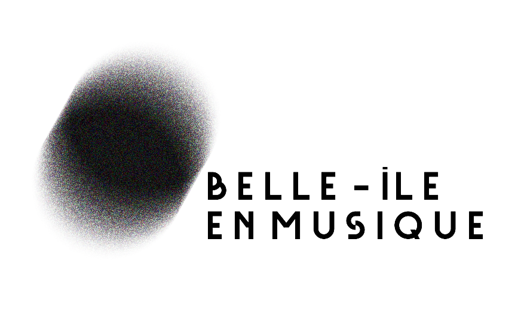

Projet : refonte de l’identité du festival de musique classique « Belle-île en musique », se déroulant à Belle-île en mer pendant la seconde quinzaine de juillet.

Description : usage de la symétrie donnant une nouvelle dimension à l’image. La duplication de la silhouette du littoral génère un nouveau visuel qui nous permet de donner un autre aperçu de l’île. Cette démarche symbolise le pouvoir de la musique qui permet de donner une autre dimension à l’environnement dans lequel elle est écoutée.

Objectif : aborder la musique classique et la péninsule par :
- La confrontation des flux
(qui représente le mouvement dans différents états).
- Création d’une nouvelle frontière
(qui aborde les effets de dimension, de dépassement).
- L’intrusion musicale
(se frayant ou créant un chemin à l’aide du territoire géographique de Belle-île-en-mer).
L’idée de mouvement constant rapproche les notions
de vagues et de rythme musical. Le caractère péninsulaire du lieu amène une exclusivité, un rapprochement entre public et performances.